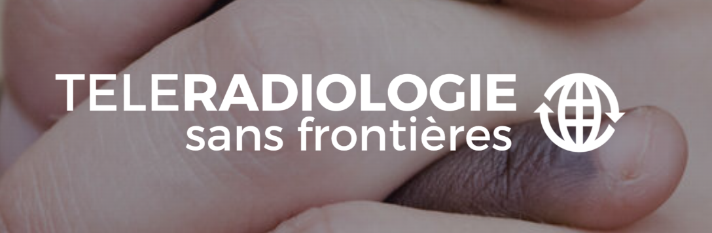
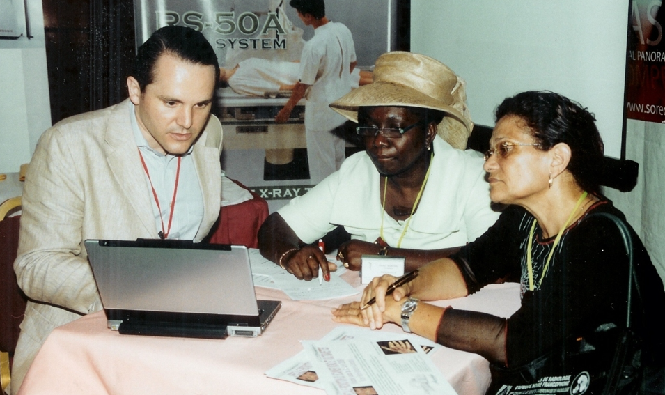

À propos de TSF
Téléradiologie Sans Frontières (TSF) était une association sans but lucratif (a.s.b.l.) basée au Luxembourg, active de 2007 à 2014.
Fondée en 2007, TSF proposait un second avis radiologique à distance pour faciliter l’interprétation des dossiers dans des contextes médicaux à ressources limitées. L’association a développé un modèle de télé-coopération radiologique Nord-Sud reposant sur une infrastructure professionnelle et un réseau international de radiologues bénévoles.
Dès 2007, TSF a mis en place une infrastructure de téléradiologie hébergée à Paris et New York pour la transmission, l’analyse et l’archivage sécurisé de dossiers radiologiques. Des projets documentés ont notamment concerné le Cameroun, l’Afghanistan, le Burkina Faso, la République démocratique du Congo et le Bénin.
Jusqu’en 2011, TSF a contribué à rendre des outils de téléradiologie accessibles gratuitement dans plusieurs contextes à ressources limitées. Les radiologues participant aux lectures à distance étaient basés notamment en France, Belgique, Luxembourg, Venezuela, Portugal et aux États-Unis.


Une démonstration de faisabilité
TSF a démontré la faisabilité opérationnelle d’un système moderne de télé-coopération radiologique au service de structures médicales situées dans des contextes à ressources limitées.